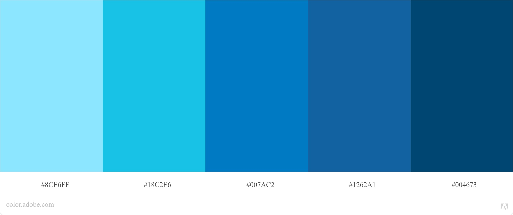

Color Scheme Proposal

The color palette or color scheme was chosen with the purpose of the portal in mind. The color scheme used in this document was taken from https://color.adobe.com/. site responsible for providing color options for designers.
Portal Background: #007AC2
Header Background: #004673
Header Font Color: #FFFFFF
Navigation Bar Background: #1262A1
Navigation Bar Font Color: #FFFFFF
Navigation Bar Mouse Hover: #314755, #26a0da, #314755
Text color: Black